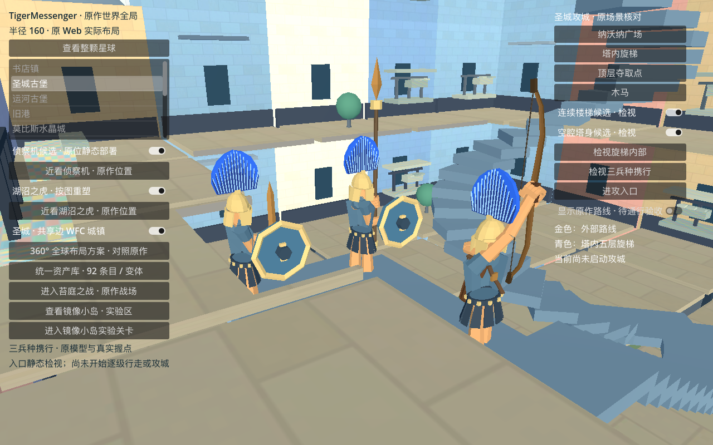
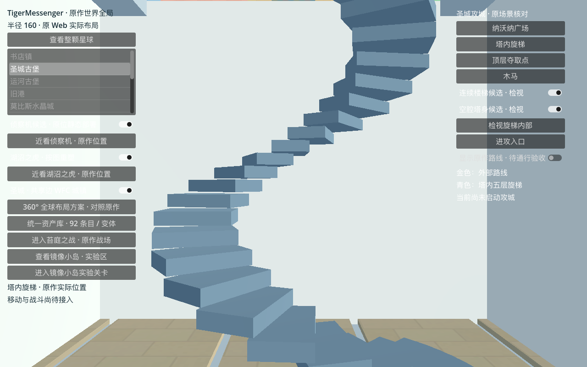
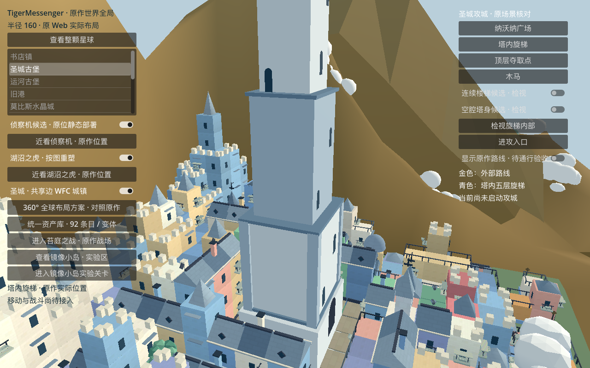
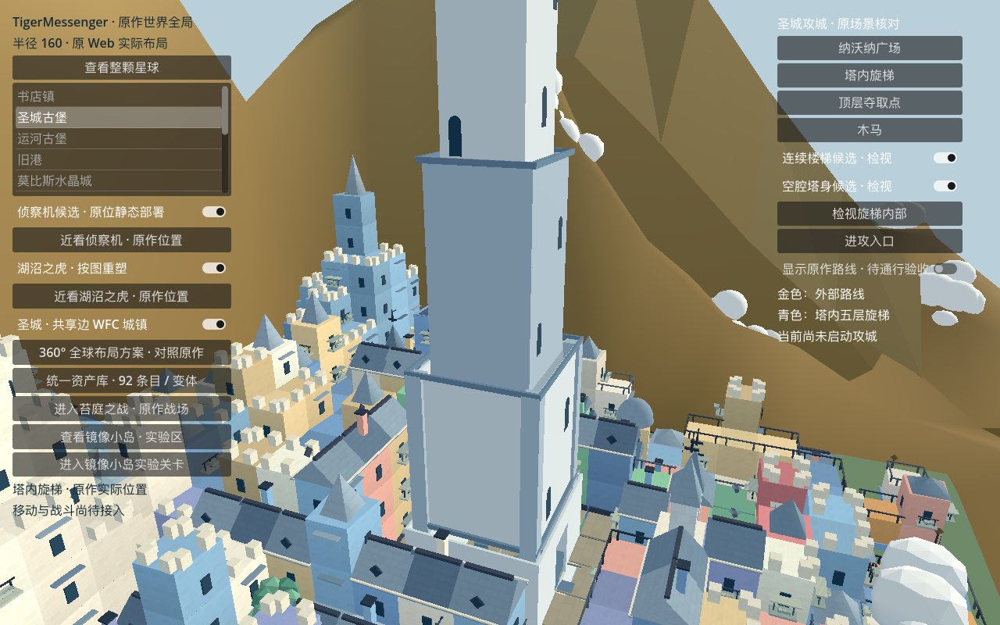
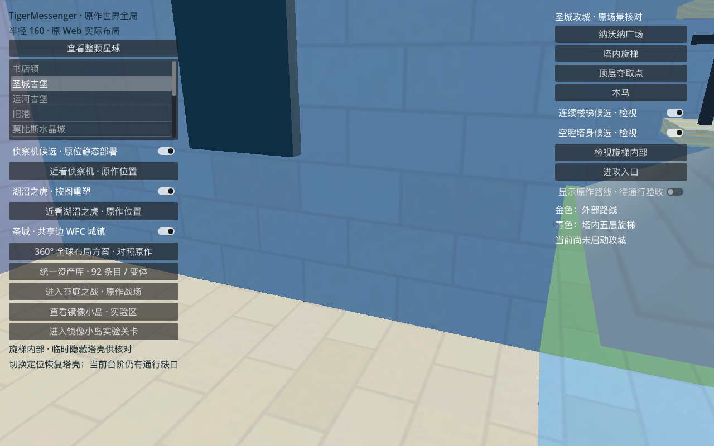
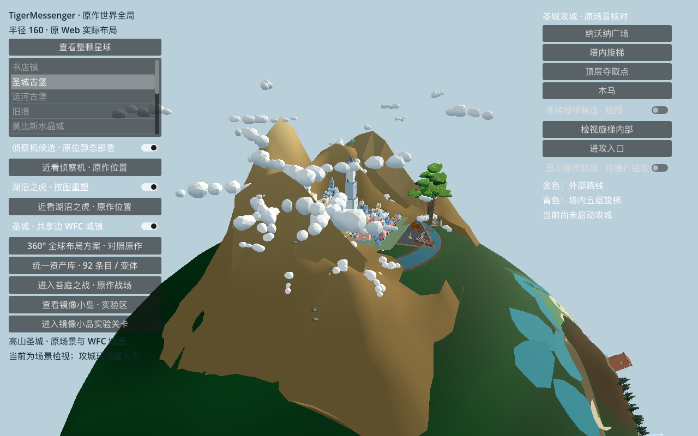
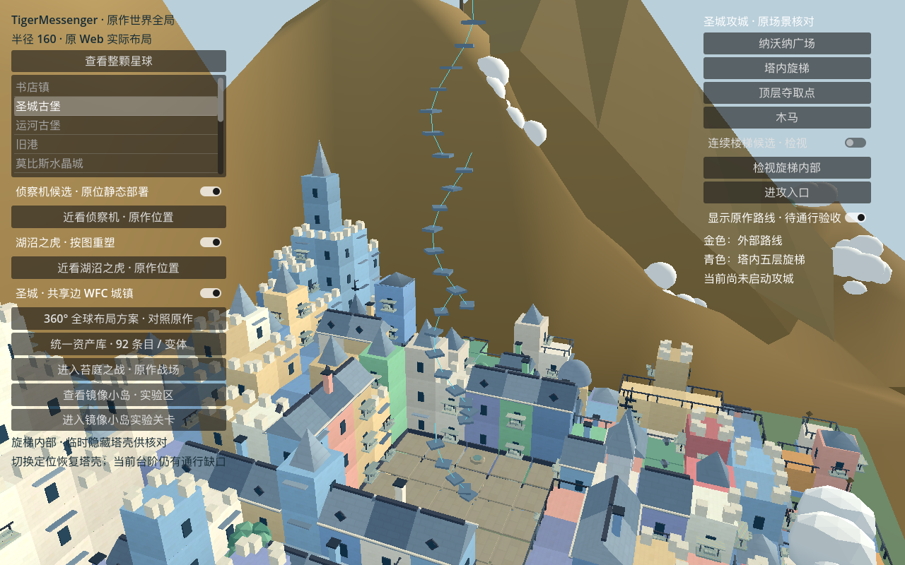
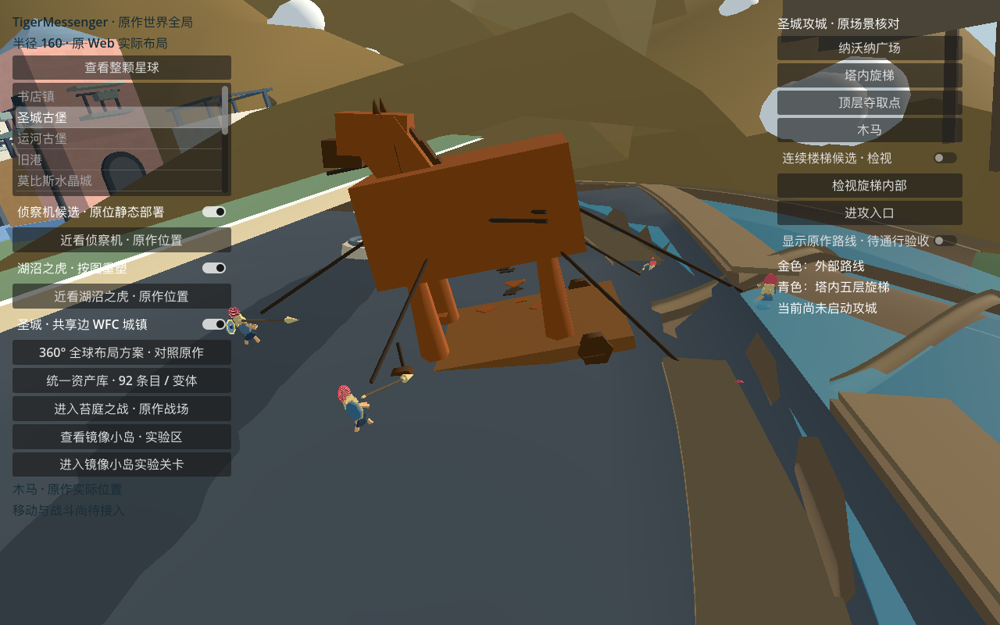

短剑竖持、长矛握柄对齐、弓箭兵抬弓并恢复待机弦。保留认可模型的头盔、裙甲和真实握点。

三种士兵各通过 1,671 个含装备的几何采样检查。当前图片为入口静态检视；连续转弯、抬脚、队列和交战仍待接入。
本轮接通塔内结构：空腔塔身、入口转弯、五层旋梯与顶层出口；为穿入塔内的城镇楼板开洞，保留周围城镇。
整城几何下 1,705 个身体代理与承托采样通过，洞外楼板碰撞仍在。尚未完成三兵种实际行走、武器携行和外部街道接入，当前不能当作可玩攻城。
Godot 右侧可关闭“连续楼梯候选”和“空腔塔身候选”，恢复旧结构。





临时隐藏塔壳，切换定位会恢复。可见原踏板稀疏，后续需要连续踏步与楼层平台。

207 块踏板，保留五层高度，最大级高 0.139 模型单位；统一旋转方向，使层间连续。1,422 个候选承托与限高抬步代理检查通过，未包含原实心塔壳、真实武器、入口和顶层出口。开关可恢复原楼梯。
